To modernise the club's visual identity, making it more contemporary, recognisable and adaptable across different communication media, without losing the connection to the association's tradition.
The final proposal presents a minimal, strategic visual identity built on simple shapes, typographic contrast and a clean graphic language — able to represent, at once, the logic, concentration and competitiveness associated with chess.
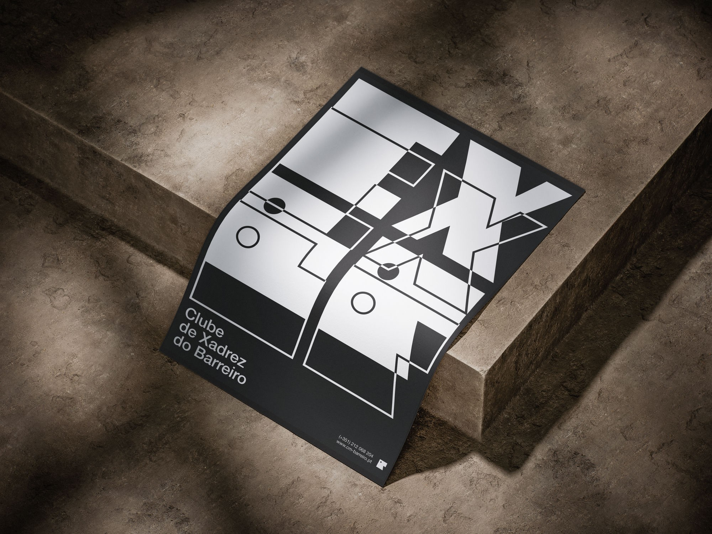
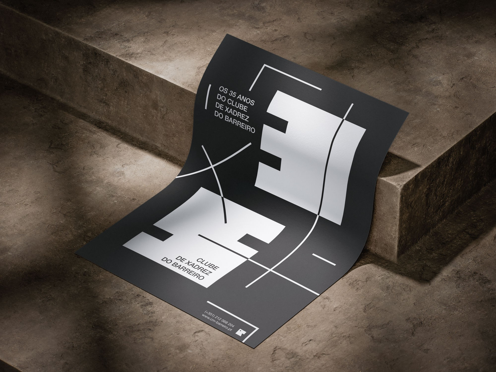
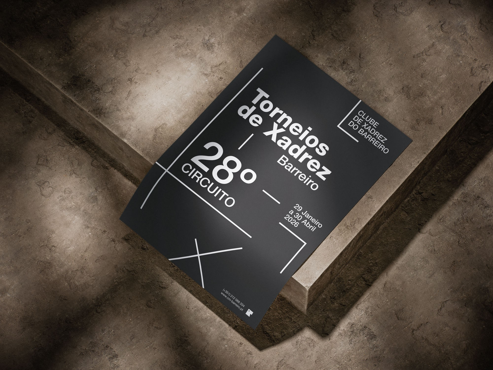
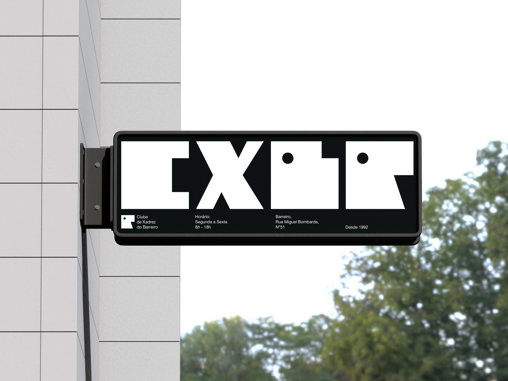

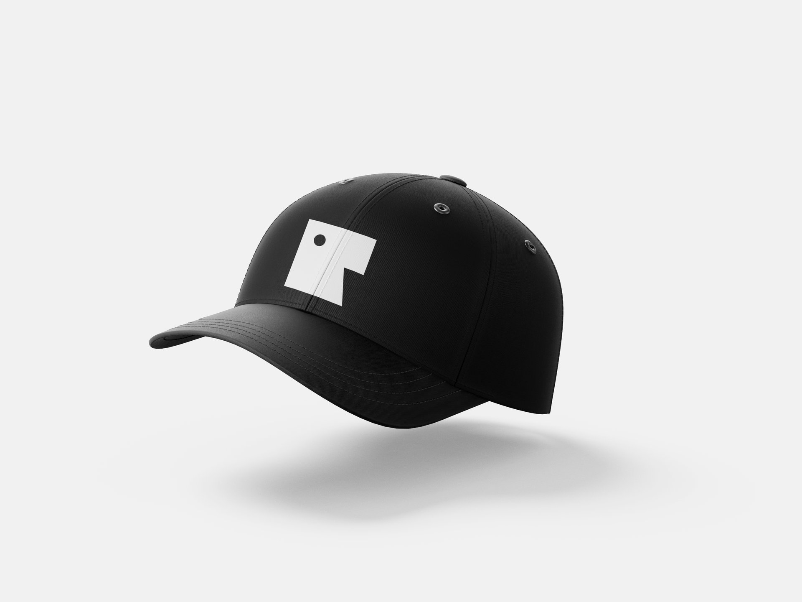
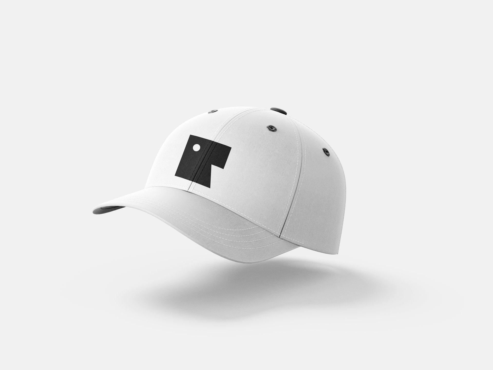

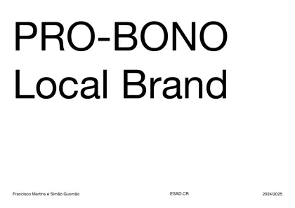
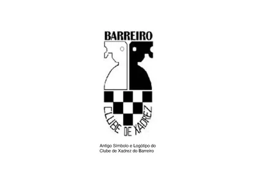
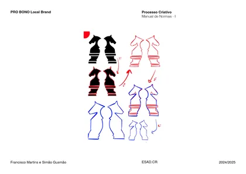
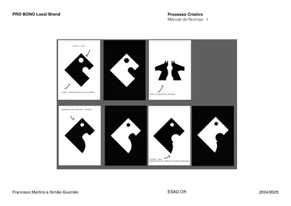
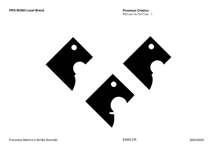
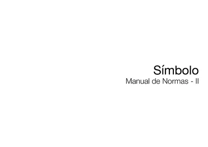
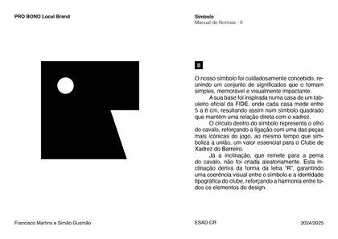
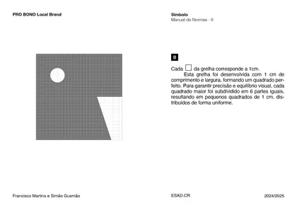
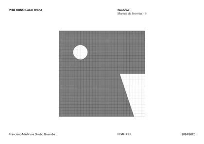
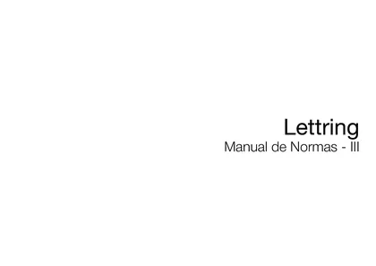
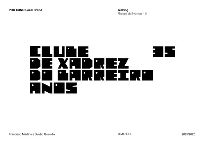
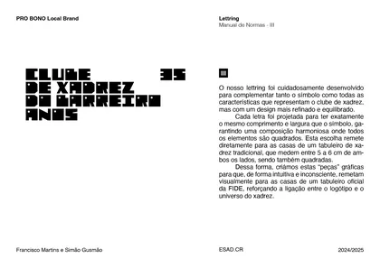
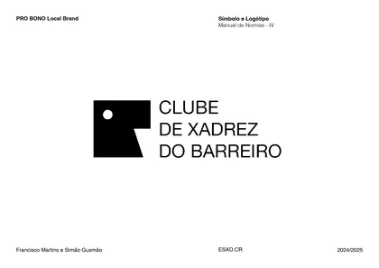
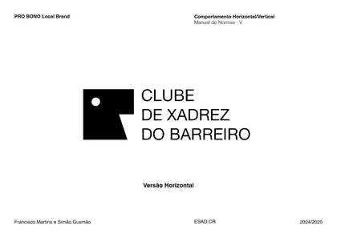
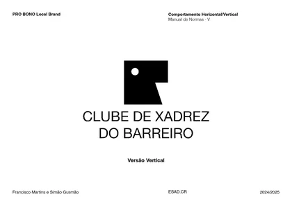
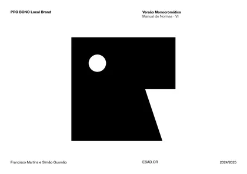
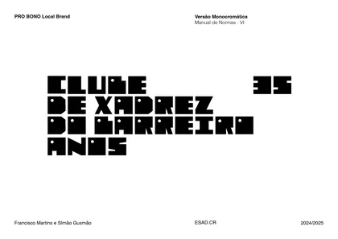
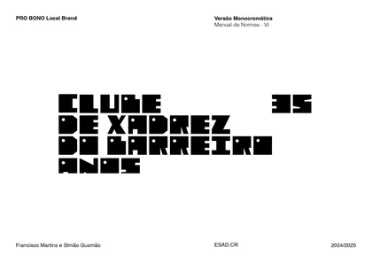
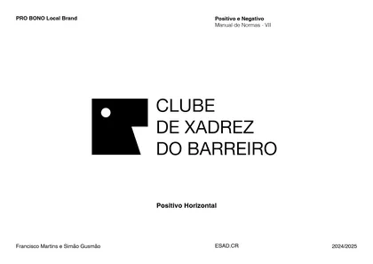
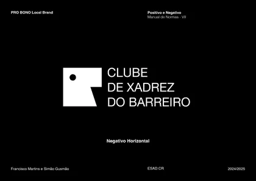
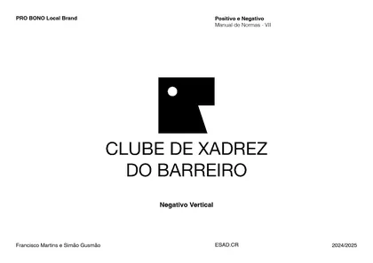
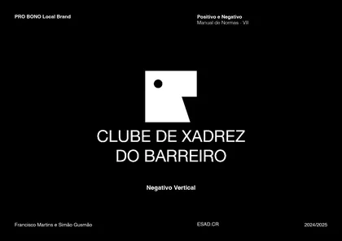
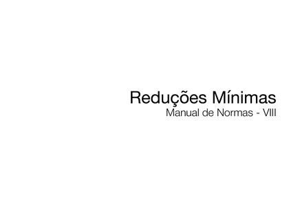
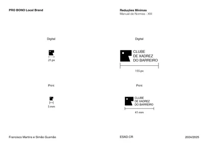
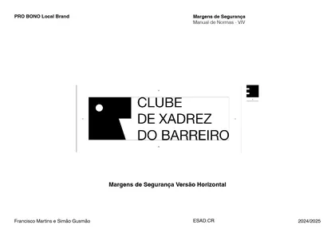
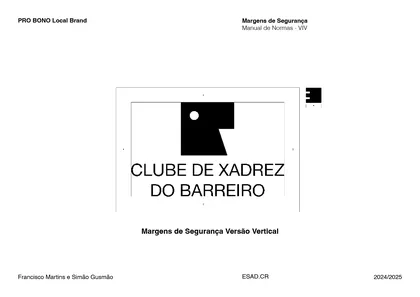
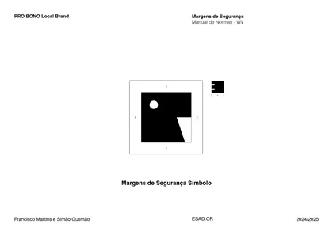
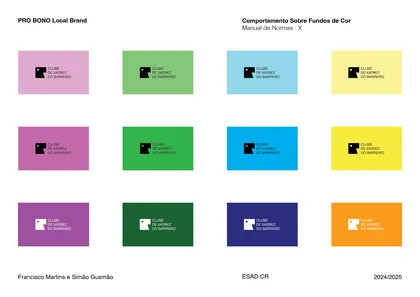
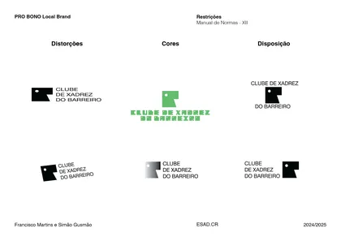
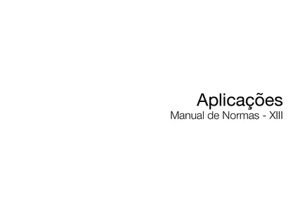
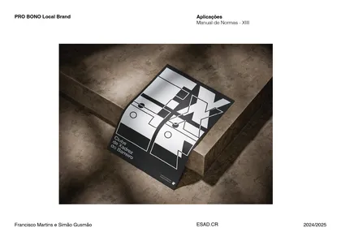
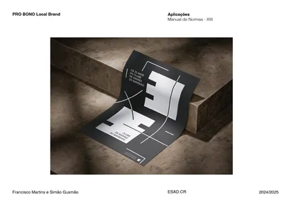
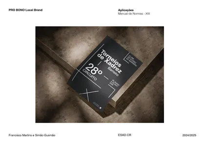
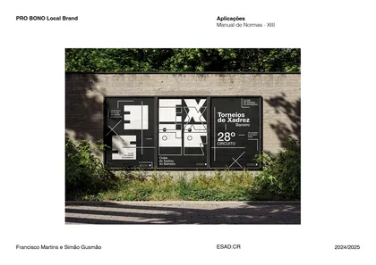
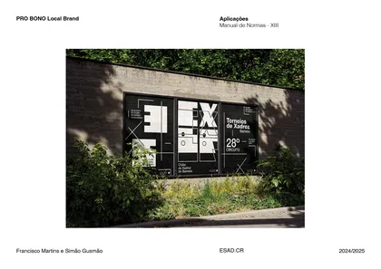
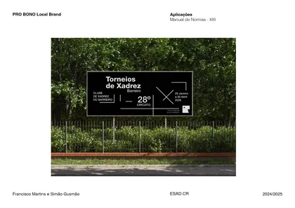
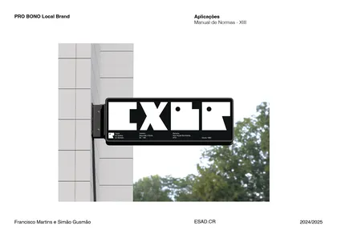
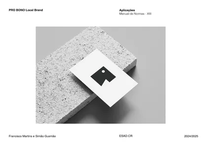
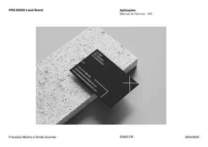
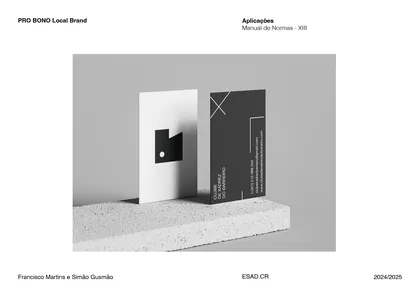
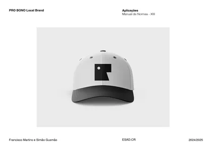
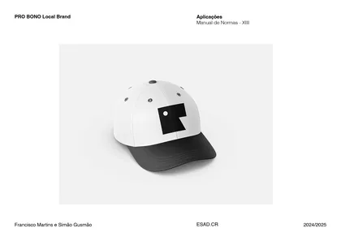
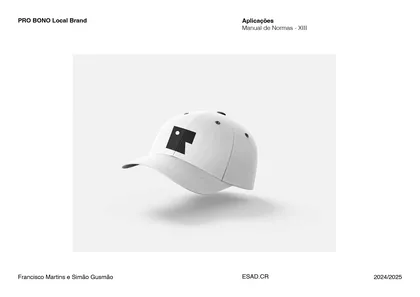
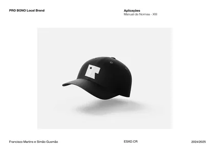